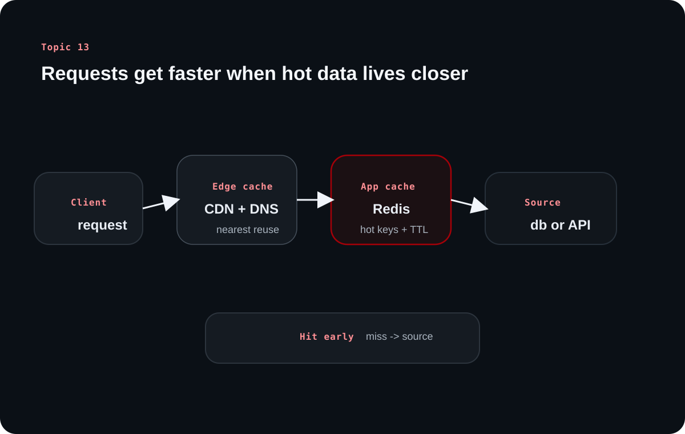

Topic 13 explains why caching sits behind so many fast systems. The article moves from the basic idea of reusing expensive work to the concrete layers, tools, and policies that backend engineers use every day.
Inside this article
Cache hitsCDNDNSRedisStrategiesEvictionUse cases
The source's core lesson is selective reuse. Caches are valuable not because they store everything, but because they keep the right subset of data closer to the point where speed matters.
Chapter 1
Caching reduces repeated work by keeping a fast subset nearby
The source starts with the broad definition before diving into specific tools.
Caching is about latency and effort reduction
Caching stores a subset of frequently or predictively used data in a faster place so the system does not have to repeat expensive work every time. That work may be computation, disk access, or a slow network trip.
The source frames caching as essential wherever milliseconds matter. High-performance systems rely on it because repeated heavy operations are too costly to recompute on every request.
Google, Netflix, and Twitter show why caching matters at scale
Google caches expensive search results, Netflix uses edge caches to place popular content closer to viewers, and Twitter-like trending systems cache frequently recomputed outputs that do not need to be recalculated on every request.
These examples differ in medium, but they share the same pattern: expensive results become cheap once the system can reuse them quickly.
Chapter 2
Caching appears at network, hardware, and software layers
The source organizes caching into three levels because backend systems benefit from multiple kinds of speedup at once.
Network caches shorten the path between users and content
CDNs place cached content on edge servers or points of presence so static assets, media, and other reusable responses can be served closer to the user. DNS caching does something similar for name resolution, avoiding repeated recursive lookups across the DNS hierarchy.
Both forms reduce latency before the backend application even begins doing its own work.
Hardware and software caches reuse the same principle at different scales
CPU caches and RAM exist because faster memory layers dramatically reduce access cost. In-memory systems such as Redis and Memcached then use that same speed advantage at the software level to make backend reads and writes much faster than disk-backed access patterns.
This is why the source repeatedly contrasts RAM and disk: durable storage holds truth, while memory-backed caches hold the fast subset.
Learning diagram

A cache hierarchy works best when misses fall through cleanly to the source of truth and hits return early from a faster layer.
Chapter 3
Strategies and eviction policies determine whether a cache stays useful
A cache helps only when data arrives at the right time and leaves at the right time.
Cache-aside and write-through solve different freshness problems
The source highlights lazy caching, also called cache-aside, where the application checks the cache first and only fetches the backing data on a miss. Once the value is fetched, it is written into the cache for later requests.
Write-through caching updates the cache at the same time as the underlying database so the cache stays warmer and more current. The tradeoff is extra work on writes, but it can reduce miss penalties for read-heavy paths.
Eviction decides what stays when memory runs out
A cache is limited by design, so it must decide what to remove. The source covers no-eviction behavior, least recently used, least frequently used, and TTL-driven expiration as common strategies.
These policies matter because a cache that keeps the wrong data is still technically full but strategically useless.
Policy
Keeps
Useful when
TTL
Data until its time limit expires
Freshness matters and reuse has a natural lifetime
LRU
Recently touched data
Access patterns show locality of use
LFU
Frequently requested data
Popularity is more stable than recency
No eviction
Existing data until writes fail
Rarely used for general-purpose app caching
Chapter 4
Backend engineers use caches to protect databases, APIs, and authentication flows
The source becomes especially practical in its final sections by naming the places caching shows up in production systems.
The recurring backend use cases are query reuse, session state, API shielding, and request control
Query caching reduces database load for expensive or frequently repeated reads. Session storage keeps authentication lookups fast. API response caching protects cost and rate limits for external providers. In-memory counters also make rate limiting viable without burdening the primary database.
These examples are useful because they show caching as a systems tool, not only a performance hack. Each one changes the cost profile of the whole request path.
Use case
Common cache role
Why it helps
Database queries
Store expensive read results
Reduces database load and response time
Sessions
Hold session tokens or state
Avoids hitting durable storage on every request
External APIs
Reuse provider responses with TTL
Cuts latency, cost, and rate-limit pressure
Rate limiting
Track counters in memory
Enables fast per-request checks
The real skill is deciding what deserves caching
The source's examples all share two signals: the work is expensive, and the answer is reused enough to justify storage. That is the better question than asking whether a team should use Redis.
When data changes constantly or correctness depends on instant freshness, the benefit may be smaller or the invalidation cost may be too high. Caching pays off when reuse beats complexity.
Overall takeaway
What to remember
Caching is selective reuse across network, hardware, and software layers. The backend engineer's job is to know where repeated work is costly, what data is safe to reuse, and which strategy keeps the cache helpful rather than misleading.